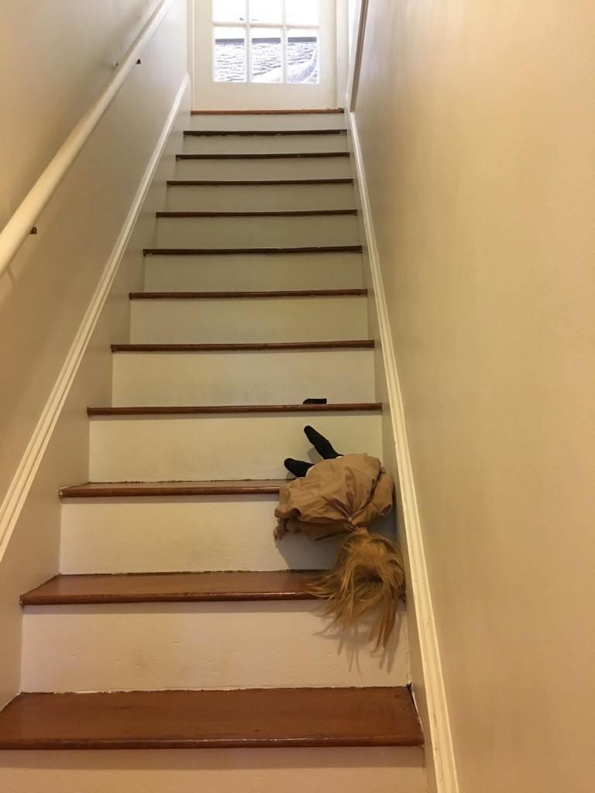

Okay, but what does any of this have to do with your wedding?
Aha, therein lies a tale. Last summer, on the way out to Cape Cod with a little extra time to kill, we stopped at the town of Yarmouth Port so Matthias could show Rebecca a really remarkable tree. There aren’t many trees around that are worth going out of your way for, but trust us, this one really is. But something even more worth going out of your way for, it turned out, was right across the street: the house where Edward Gorey lived and worked. It’s now a museum of his life and art.
{kind=link}
We went back the next day when we had more time available, and found that it was an amazing place, suffused with the whimsy, wit, and weirdness that fills Gorey’s work, and evidence of a personality to match. It’s decorated with his personal collections; the walls are adorned with his illustrations and framed articles about him; and examples of his peculiar humor are everywhere. We instantly loved it.
{kind=link}
{kind=link}
{kind=link}
Best of all, there’s a scavenger hunt: all 26 of the Gashlycrumb Tinies are represented somewhere in the house, and the task is to find them all. (Watch out for the tour guide who desperately wants to tell you where they all are before you have a chance to find them yourself!)
{kind=link}
What neither of us knew that day, though, was that the location would soon become even more important to us. A week later, Matthias proposed to Rebecca beneath the branches of that really cool tree. And so it just seemed natural to adopt Gorey as the patron saint of our wedding.